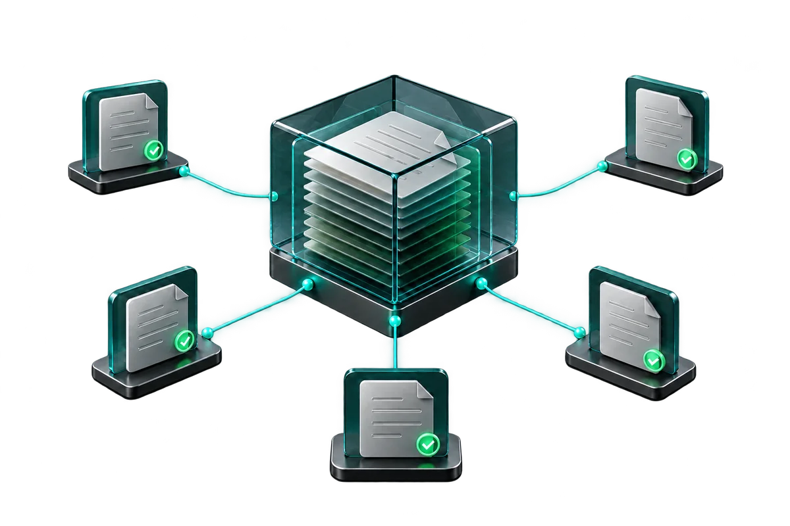
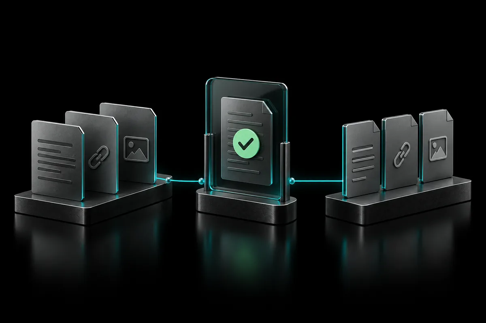
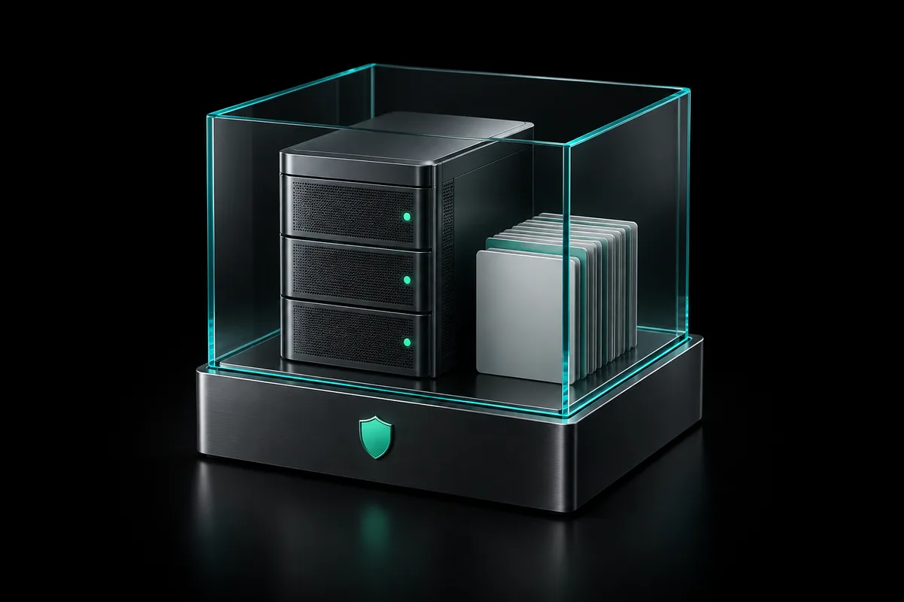
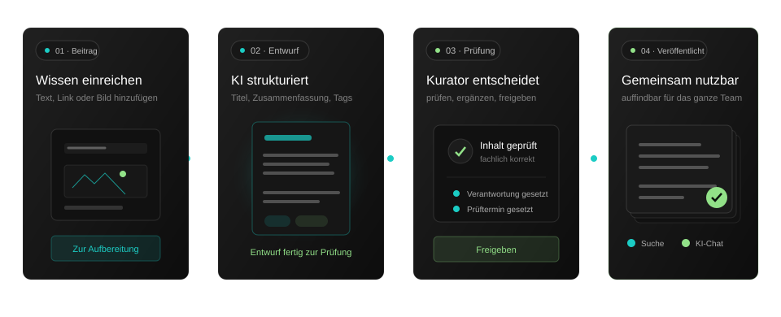
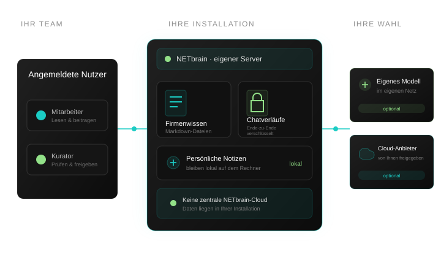

Wissensplattform von NETFACTORY
Das Wissen Ihres Teams.
Für alle auffindbar.
Unter Ihrer Kontrolle.
NETbrain macht aus verstreuten Informationen einen geprüften Wissensbestand. Ihr Team hält Erfahrungen fest, findet vorhandene Antworten und nutzt KI mit Ihrem Firmenwissen. Die Plattform läuft auf Ihrem Server. Sie wählen, ob Sie ein eigenes KI-Modell oder einen Cloud-Anbieter anbinden.
30 Minuten · mit Beispielen aus Ihrem Arbeitsalltag
Betrieb auf Ihrem Server Wissen als offene Markdown-Dateien Entwicklung und Betreuung aus Fürstenau

Herausforderungen
Das Wissen ist da. Auffindbar ist es nicht.
Erfahrungen, Anleitungen und Antworten verteilen sich auf Köpfe, Postfächer und Ordner. Im Alltag bedeutet das: wiederholt suchen, nachfragen und neu erklären.
Wissen in wenigen Köpfen
Der Kollege, der „das immer gemacht hat“, ist im Urlaub, wechselt die Stelle oder geht in Rente. Dann fehlt das Erfahrungswissen, das nie jemand aufgeschrieben hat.
Antworten in Postfächern
Die Lösung von damals existiert — in einem Mailverlauf, den nur die Person kennt, die dabei war. Gesucht wird sie trotzdem jedes Mal neu.
Ablagen, die niemand mehr durchsucht
Zehn Jahre Ordnerstruktur, drei Generationen Benennungslogik. Dateien sind vorhanden, aber Finden kostet mehr Zeit als Neumachen.
KI-Nutzung an der IT vorbei
KI hilft bei der täglichen Arbeit. Fehlt ein abgestimmter Zugang, können Firmenunterlagen bei Diensten landen, die Ihre IT dafür nicht freigegeben hat.
Genau hier setzen wir an
Firmenwissen, persönliche Notizen und KI an einem Ort.
Ihr Team greift auf geprüftes Firmenwissen zu, hält eigene Gedanken fest und stellt Fragen im KI-Chat. Gemeinsame Inhalte, persönliche Notizen und Chatverläufe haben dabei jeweils ihren eigenen Bereich.
Firmenwissen
Alle Mitarbeiter können Wissen beitragen. Ein Kurator prüft die Beiträge und gibt sie frei. So entsteht ein gemeinsamer Bestand, in dem Ihr Team geprüfte Anleitungen, Erfahrungen und Antworten findet.
Persönliche Notizen
Eigene Gedanken und Arbeitsnotizen bleiben in einem lokalen Ordner auf dem Rechner des Mitarbeiters. Sie gehören zum persönlichen Arbeitsbereich und werden nicht auf dem NETbrain-Server gespeichert.
KI-Chat
Fragen zum Firmenwissen stellen und Antworten im Gespräch vertiefen — mit einem eigenen KI-Modell oder einem Cloud-Anbieter Ihrer Wahl. Gespeicherte Chatverläufe sind Ende-zu-Ende verschlüsselt.



Was zeigt der Film?
Inszenierte Produktansichten mit Beispieldaten, auch ohne Ton verständlich: Ein Teammitglied sucht nach einer Projektübergabe und findet geprüfte Anleitungen. Im KI-Chat lässt sich Firmenwissen automatisch, immer oder gar nicht als Kontext heranziehen. Mit der Einstellung „An“ beantwortet der Chat die Frage zum Ablauf anhand passender Wissensauszüge und zeigt die verwendeten Seiten. Anschließend macht die rotierende Globusansicht Verbindungen zwischen den Themen sichtbar.
Im Alltag
Wissen einfach erfassen. Gemeinsam aktuell halten.
Ein Wissensbestand hilft, wenn Menschen ihn nutzen und pflegen. NETbrain unterstützt Ihr Team vom ersten Entwurf bis zur nächsten fachlichen Prüfung.

Erfassen
Erfahrungen einfach festhalten
Text, Link oder Bild hinzufügen: Die KI erstellt einen strukturierten Entwurf mit Titel, Zusammenfassung und Schlagworten. Sie prüfen ihn und reichen ihn zur Freigabe ein. Beiträge lassen sich auch vollständig ohne KI erstellen.
Prüfen
Geprüftes Wissen gemeinsam nutzen
Ein Kurator prüft neue Beiträge, veröffentlicht sie oder ergänzt bestehende Seiten. Mitarbeiter können den Bearbeitungsstand ihrer Beiträge sehen. So wächst ein Bestand, dessen Inhalte vor der Veröffentlichung geprüft wurden.
Finden
Antworten finden — auch ohne KI
Die Stichwortsuche durchsucht das freigegebene Firmenwissen ohne KI-Aufruf und ohne Übertragung an einen externen Dienst. Für eine formulierte Antwort oder Rückfragen wechseln Sie mit Ihrer Frage in den KI-Chat.
Pflegen
Wissen altert. NETbrain sagt es Ihnen.
Die Pflegeansicht zeigt überfällige Prüfungen, fehlende Verantwortliche und doppelte Inhalte. Ihr Team sieht, welche Seiten Aufmerksamkeit brauchen, und kann sie gezielt überarbeiten.
Für den täglichen Betrieb stehen außerdem Versionshistorie, Papierkorb, Wissenslandkarte und verschlüsselte Sicherungen bereit. Benutzer, Rollen, KI-Zugänge und Updates verwalten Sie im Browser.
Ihre Vorteile
Weniger Suchen. Mehr Weitergeben.
Was sich im Arbeitsalltag konkret ändert, wenn Wissen einen Ort hat, an dem es gepflegt wird.
- NachfragenDie Antwort steht bei einer Person, die gerade nicht da ist.
- EinarbeitungNeue Kollegen lernen durch Zuschauen und wiederholtes Fragen.
- DokumentationWird verschoben, weil Aufschreiben länger dauert als Machen.
- KI-NutzungFindet statt, nur unkontrolliert und mit fremden Diensten.
- AktualitätNiemand weiß, welche Anleitung noch gilt und welche veraltet ist.
- NachfragenDokumentierte Antworten sind für das Team im Firmenwissen auffindbar.
- EinarbeitungNeue Kollegen lesen sich selbst ein — im kuratierten Bestand.
- DokumentationMaterial hinzufügen, KI-Entwurf prüfen und zur Freigabe einreichen.
- KI-NutzungIhr Team nutzt die freigegebenen KI-Anbieter über NETbrain.
- AktualitätÜberfällige Prüfungen und fehlende Verantwortliche werden sichtbar.
Datenhoheit
Ihr Server. Ihr Wissen. Ihre Entscheidung.
Sie bestimmen, wo NETbrain läuft und welche KI-Anbieter Ihr Team nutzen darf. Ihr Firmenwissen bleibt in einem offenen Dateiformat auf Ihrem Server.

Eine Installation je Kunde
Sie betreiben NETbrain als eigene Installation in Ihrem Unternehmen oder bei Ihrem Hoster. Dort wird Ihr Firmenwissen gespeichert und verwaltet.
Wissen bleibt lesbar
Ihr Firmenwissen liegt als Markdown-Dateien vor. Diese lassen sich kopieren, in einem Texteditor öffnen und auch unabhängig von NETbrain weiterverwenden.
Klare Bereiche für Ihr Wissen
Freigegebenes Firmenwissen ist für alle angemeldeten Mitarbeiter lesbar. Eingereichte Beiträge prüfen die Kuratoren in einem eigenen Bereich. Persönliche Notizen bleiben auf dem jeweiligen Rechner.
Chatverlauf verschlüsselt
Ihre gespeicherten Chatverläufe sind Ende-zu-Ende verschlüsselt. Sie entsperren sie im Browser mit Ihrem Passwort. Zur Beantwortung einer Anfrage verarbeitet der gewählte KI-Anbieter die dafür übermittelten Inhalte.
KI nur, wenn Sie es wollen
Sie wählen den Anbieter — eigener Modellserver oder Cloud — und legen fest, wer ihn nutzen darf. Ohne KI-Zugang bleiben Suche und Notizen voll nutzbar.
Ohne Werbe-Tracking
NETbrain verwendet nur die für den Betrieb notwendigen Cookies und bindet keine Werbenetzwerke oder Analysedienste ein.
Ihr Einstieg
Von der ersten Frage zum laufenden Betrieb.
Wir zeigen Ihnen NETbrain, begleiten die Einrichtung auf Ihrem Server und planen mit Ihnen die ersten Schritte für Ihren Wissensbestand.
01
Live-Demo
In 30 Minuten besprechen wir Ihre Ausgangslage und zeigen NETbrain an Beispielen aus Ihrem Arbeitsalltag. Gemeinsam klären wir, ob ein Pilot für Ihr Unternehmen passt.
02
Vorbereitung
Ihre IT bereitet den Server anhand unserer Checkliste vor. Gemeinsam klären wir die KI-Anbindung und wer bei Ihnen Beiträge prüft und freigibt.
03
Einrichtung
Wenn die technischen Voraussetzungen erfüllt sind, richten wir NETbrain gemeinsam in etwa einer Stunde ein. Dazu gehören Lizenz, Administratorkonto, KI-Zugang und Sicherung. Die Einrichtung halten wir im Abnahmeprotokoll fest.
04
Betrieb
Die jährliche Lizenz je Installation umfasst Aktualisierungen und eine feste monatliche Betreuungszeit. Updates starten Sie im Browser. Ihr Team baut den Wissensbestand auf und hält ihn aktuell.
Für wen
Für Unternehmen mit 10 bis 250 Mitarbeitern.
Wenn Erfahrung Ihr Geschäft trägt
Ob Beratung, Kanzlei, IT-Dienstleistung, Agentur oder Fertigung: Ihr Team braucht das Wissen erfahrener Kollegen im täglichen Geschäft. NETbrain passt, wenn Sie dieses Wissen gemeinsam nutzbar machen möchten, eine Person für die Freigabe benennen können und eine eigene Installation betreiben wollen.
Was NETbrain nicht ersetzt
NETbrain konzentriert sich auf internes Firmenwissen und die Arbeit mit KI. Es ersetzt kein revisionssicheres Dokumentenmanagement, kein Ticketsystem und kein großes Intranet mit Redaktionsworkflow. In der Demo klären wir, ob Ihr Anwendungsfall zu NETbrain passt.
FAQ
Häufig gestellte Fragen
Wo liegen unsere Daten?
Auf dem Server, den Sie stellen. NETbrain wird als Container je Kunde installiert — im eigenen Rechenzentrum, bei Ihrem Hoster oder auf einer VM Ihrer Wahl. Es gibt keine zentrale NETbrain-Cloud, in der Ihre Inhalte zusammenliefen.
Was passiert mit unserem Wissen, wenn wir KI nutzen?
Sie wählen den KI-Anbieter. Bei einem Modell in Ihrem eigenen Netz kann die KI-Verarbeitung intern bleiben. Bei einem Cloud-Anbieter werden die für die jeweilige Anfrage zusammengestellten Inhalte dorthin übertragen, etwa Ihre Frage, beigefügte Dateien und herangezogene Wissensauszüge. Wer KI nutzen darf, legen Sie in der Administration fest.
Kommen wir wieder heraus, wenn wir wechseln wollen?
Ja. Das Firmenwissen sind Markdown-Dateien mit Metadaten in einem Ordner — kopierbar, lesbar, in jedem Editor zu öffnen. Ein Export ist deshalb kein Projekt, sondern ein Kopiervorgang.
Was kostet NETbrain?
Abgerechnet wird je Installation und Jahr, inklusive Aktualisierungen und einer festen monatlichen Betreuungszeit. Die Zahl der Benutzerkonten ist nicht begrenzt. Ein konkretes Angebot erhalten Sie nach Abstimmung Ihrer Anforderungen. Kosten für die Nutzung externer KI-Anbieter kommen gegebenenfalls hinzu.
Was braucht unsere IT?
Eine VM mit Debian oder Ubuntu, 4 GB RAM, Docker und Docker Compose, einen DNS-Namen und einen Reverse-Proxy, der TLS beendet. Vor der Einrichtung erhält Ihre IT eine vollständige Checkliste zur Vorbereitung des Servers und des verschlüsselten Zugangs.
In welchem Stadium ist das Produkt?
NETbrain befindet sich als Alpha-Version in der Pilotphase und wird bei NETFACTORY selbst täglich eingesetzt. Wir begleiten Ihren Einstieg persönlich. Als Pilotkunde haben Sie direkten Kontakt zur Entwicklung und können Rückmeldungen zu den nächsten Ausbauschritten geben. Die Software wird noch weiterentwickelt; Funktionen können sich ändern.
Wer steht dahinter?
Die NETFACTORY GmbH Internet Service in Fürstenau, seit über zwei Jahrzehnten IT-Dienstleister. NETbrain ist aus dem eigenen Bedarf entstanden. Entwicklung, Betrieb und Betreuung liegen damit in einer Hand und in Deutschland — Ihre Fragen landen bei jemandem, der die Software gebaut hat.
Selbst ausprobieren
Sieben Tage testen. Ein Befehl, keine Anmeldung.
Sie müssen auf nichts warten. NETbrain läuft auf Ihrem eigenen Server, und die ersten sieben Tage brauchen Sie dafür keine Lizenz — nur einen Befehl. Ihre Notizen und Konten bleiben danach erhalten.
$ curl -fsSL https://getnetbrain.netfactory.de/install.sh | sudo bashDas Skript lädt NETbrain, richtet den Dienst ein und nennt Ihnen zum Schluss die Adresse und das Einmal-Token für die Ersteinrichtung im Browser. Nichts davon verlässt Ihren Server.
Das braucht Ihre IT
- Linux-Server mit DockerZwei Kerne und 4 GB Arbeitsspeicher genügen für den Anfang.
- Reverse-Proxy mit TLSNETbrain spricht im Container nur HTTP und ist bewusst nicht selbst aus dem Netz erreichbar.
- DNS-NameUnter dieser Adresse ruft Ihr Team die Installation auf.
Nach den sieben Tagen wird eine Lizenz benötigt. Sie erhalten sie von uns; bis dahin bleibt alles erhalten, was Sie angelegt haben. Wenn Sie lieber begleitet einsteigen: Wir richten es mit Ihnen gemeinsam ein.
Kontakt
Erleben Sie NETbrain an Ihren eigenen Beispielen.
Welche Frage beantwortet Ihr Team immer wieder? Bringen Sie ein Beispiel mit. Wir zeigen Ihnen in 30 Minuten, wie Sie Wissen in NETbrain festhalten, prüfen und wiederfinden.
NETbrain befindet sich aktuell in der Pilotphase (Alpha). Wir begleiten Ihren Einstieg persönlich.
NETFACTORY GmbH Internet Service · Kleine Straße 5 · 49584 Fürstenau · netfactory.de